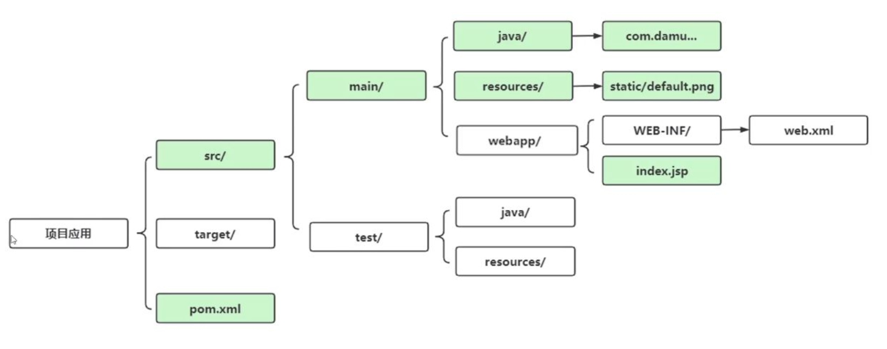
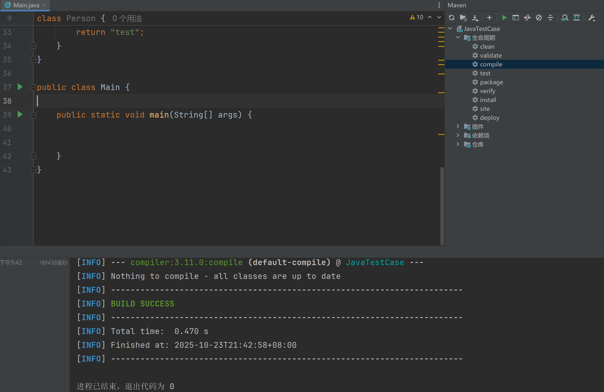

Maven 入门与依赖管理
项目管理与构建自动化 - 从零到实践
用 POM 驱动依赖、生命周期与交付引言
君子生非异也，善假于物也
—— 荀子
学习目标
- 理解 Maven 的定位与核心概念（POM、仓库、生命周期）。
- 掌握依赖声明与解析流程，告别手动管理 JAR。
- 配置本地/镜像仓库，加速国内构建体验。
- 在 IDEA 中创建与配置 Maven 项目并实践依赖使用。
完成本节后，你将能够：
- 用
pom.xml管理依赖与构建，确保可复现与一致性。 - 熟练配置本地仓库与国内镜像，解决依赖下载缓慢问题。
- 通过
mvn生命周期完成清理、编译、测试、打包的标准流程。
学习建议：
- 边读边做：在 IDEA 中新建一个
quickstart项目并跟随示例操作。 - 遇到依赖问题时，先检查
settings.xml镜像与本地仓库路径是否正确。
旧开发痛点（背景）
- 手动下载 JAR，拷贝到项目并调整依赖关系，耗时且易错。
- 不同环境依赖版本不一致，构建结果不可复现。
- 缺少统一的构建流程与测试执行，交付质量不稳定。
为何选择 Maven：
- 通过声明式依赖与仓库统一版本，消除“环境差异”。
- 规范的生命周期与插件体系，保证构建与测试能自动化执行。
- 中心化的坐标与传递依赖解析，避免“缺 JAR、版本乱”的常见问题。
什么是 Maven
Maven 名源意第绪语，意为“专家”。它是 Apache 基金会开源的项目管理与构建自动化工具，核心理念基于 POM（Project Object Model）。
与传统“手动工程”不同，Maven 用声明式的 坐标 管理依赖，统一构建生命周期与插件，极大降低了维护成本。
- 依赖管理：在
pom.xml中声明库坐标，自动下载并解析传递依赖。 - 构建生命周期：标准化
clean、compile、test、package、deploy。 - 插件机制：通过插件扩展构建能力（测试、打包、发布、站点生成）。
它帮你同时处理三件事：依赖下载与解析、规范化项目结构与构建流程、按生命周期产出稳定的一致构建结果。
仓库概念总览
Maven 仓库是存放构件（artifact）的地方，包含坐标唯一标识的 JAR、POM 等。理解仓库体系有助于解释“为什么依赖能自动下载，以及下载到哪里”。
- 本地仓库：位于你电脑的目录（默认在用户目录
.m2下），用于缓存下载的构件与加速离线构建。 - 中央仓库：官方公共仓库，权威且稳定，地址为
https://repo.maven.apache.org/maven2/。 - 镜像仓库：对中央仓库的镜像拷贝，通常配置国内源以提升下载速度与稳定性。
首次构建时，依赖会从镜像或中央仓库下载到本地仓库；之后构建优先使用本地缓存。
本地仓库（Local Repository）
- 位置：默认
${user.home}\.m2\repository（如C:\\Users\\你的用户名\\.m2\\repository）。 - 作用：缓存依赖以加速构建；可在离线情况下复用已下载依赖。
- 流程：优先从本地查找，缺失时再访问远程仓库。
可通过 settings.xml 自定义本地仓库路径 。
settings.xml在默认目录（C:\Users\用户\.m2）中开始不存在， 可直接添加一个 settings.xml
中央仓库（Central Repository）
- 定义：由社区官方维护的全球性远程仓库，收录丰富且权威。
- 默认依赖来源：本地缺失时自动从中央仓库下载。
- 访问地址：
https://repo.maven.apache.org/maven2/
镜像仓库（Mirror Repository）
- 目的：加速国内访问、提升可用性。
- 机制：对被镜像仓库（如 central）的请求自动重定向到镜像地址。
在 settings.xml 中配置镜像：
<mirrors>
<mirror>
<id>aliyunmaven</id>
<mirrorOf>central</mirrorOf>
<name>Aliyun Maven</name>
<url>https://maven.aliyun.com/repository/central</url>
</mirror>
</mirrors>IDEA 中配置 Maven
在 IntelliJ IDEA 中打开 File → Settings → Build Tools → Maven。


开始推荐使用IDEA自带的 Maven，以快速上手。
IDEA 设置确认与 maven.config 提示
注意：若项目内存在 .mvn/maven.config，可能覆盖部分命令行为（如设置离线、仓库地址等）。
我们这里的项目一般没有构造该文件，所以没关系。若存在可先取消或审查其内容。
修改 settings.xml（本地仓库与镜像）
在 settings.xml 中指定 本地仓库路径 与 镜像仓库，提升国内下载速度并保证构建一致。
<settings xmlns="http://maven.apache.org/SETTINGS/1.0.0" xmlns:xsi="http://www.w3.org/2001/XMLSchema-instance"
xsi:schemaLocation="http://maven.apache.org/SETTINGS/1.0.0 http://maven.apache.org/xsd/settings-1.0.0.xsd">
<localRepository>D:/software/apache-maven/repository</localRepository>
<mirrors>
<mirror>
<id>aliyun</id>
<mirrorOf>central</mirrorOf>
<name>aliyun</name>
<url>https://maven.aliyun.com/repository/public</url>
</mirror>
</mirrors>
</settings>操作要点：
- localRepository：将仓库放在稳定路径（非系统盘更佳），便于不同项目共享缓存。
- mirrorOf：
central表示仅镜像中央仓库；*表示匹配所有仓库（谨慎使用）。 - 协议：优先使用
https，避免http的中间人风险。
创建 Maven 项目
在 IDEA 中选择 New Project → Maven，勾选使用已安装的 Maven 与你的 settings.xml。
填入 GroupId 与 ArtifactId，生成标准目录结构。
步骤参考：
- 选择 Maven 模板或 maven-archetype-quickstart 原型快速生成示例项目。
- 创建后先确认
pom.xml的存在性，并在右侧侧边栏中选择Maven窗口确认可用性。

Maven 项目结构
目录遵循「约定优于配置」，统一结构便于工具识别与团队协作。
src/main/java：业务源代码；src/test/java：测试源代码。src/main/resources：资源文件（配置、模板等）；打包进入classes。pom.xml：项目对象模型，记录依赖、插件、构建与项目信息。- 如需自定义目录，通常通过插件或
build配置调整，但建议遵循默认结构。
POM 基础示例
<project xmlns="http://maven.apache.org/POM/4.0.0"
xmlns:xsi="http://www.w3.org/2001/XMLSchema-instance"
xsi:schemaLocation="http://maven.apache.org/POM/4.0.0 http://maven.apache.org/xsd/maven-4.0.0.xsd">
<modelVersion>4.0.0</modelVersion>
<groupId>cn.demo.learn</groupId>
<artifactId>learn</artifactId>
<version>1.0.0</version>
<name>learn</name>
<description>hello</description>
<properties>
<maven.compiler.source>17</maven.compiler.source>
<maven.compiler.target>17</maven.compiler.target>
</properties>
</project>核心元素说明：
groupId+artifactId+version构成唯一坐标。properties常用于统一 JDK 编译版本与自定义属性。- 发布中的开发版通常带
-SNAPSHOT后缀，表示“快照”不稳定版本。
建议：坐标命名遵循组织域名反写（如 cn.demo），版本采用语义化版本。
项目唯一标识：GAV 与属性
<groupId>：组织/公司 ID（反向域名，如org.apache）。<artifactId>：项目/模块 ID（在组内唯一）。<version>：版本（-SNAPSHOT表示开发版）。
<properties> 用于统一配置（如 Java 版本），避免硬编码。
声明式依赖管理（查找与添加）
在 MVNRepository 或官方仓库查询依赖，复制坐标到 pom.xml。
<dependencies>
<dependency>
<groupId>org.projectlombok</groupId>
<artifactId>lombok</artifactId>
<version>1.18.22</version>
<scope>provided</scope>
</dependency>
</dependencies>查找依赖的实操步骤：
- 在 MVNRepository 搜索所需库（如
lombok）。 - 进入库页面后选择合适版本，优先稳定版，避开
alpha/beta/RC。 - 切换到
Maven选项卡，复制groupId/artifactId/version。 - 若仅开发期/编译期需要，设置
<scope>provided</scope>（例如 Lombok）。 - 保存后在Maven工具中点击 生命周期中的
compile触发下载，观察控制台是否拉取并缓存到本地仓库。
示例：添加 Lombok 依赖
<dependency>
<groupId>org.projectlombok</groupId>
<artifactId>lombok</artifactId>
<version>1.18.22</version>
<scope>provided</scope>
</dependency>保存后，IDEA 会自动下载依赖并在代码中生效。
代码示例：Student 与 Main
import lombok.AllArgsConstructor;
import lombok.Data;
@Data
@AllArgsConstructor
public class Student {
String name;
int age;
}public class Main {
public static void main(String[] args) {
Student student = new Student("小明", 18);
System.out.println(student);
}
}输出示例：Student(name=小明, age=18)，说明 Lombok 已生效。
Maven 依赖解析流程
解析顺序：本地仓库 → 远程仓库（镜像/中央） → 缓存 → 解析传递依赖 → 加入类路径。
- 先查本地仓库（
~/.m2/repository）是否已有目标GAV的.jar/.pom。 - 未命中时按仓库配置访问镜像或中央仓库，下载并缓存到本地。
- 解析
.pom的传递依赖，按作用域与冲突规则选择版本。 - 最终将有效依赖加入项目类路径参与编译/运行。
排查建议：使用 mvn dependency:tree 查看依赖树；冲突时可用 exclusions 或统一版本管理解决。
依赖作用域（scope）与类型（type）
作用域决定依赖在编译、测试与运行阶段的可见性；正确设置能减少包冲突与体积。
- compile：默认作用域；编译、测试、运行均有效。
- provided：编译、测试有效；运行时由环境提供（如
lombok）。 - runtime：运行、测试有效；编译期不参与（如 JDBC 驱动）。
- test：仅测试阶段有效（如 JUnit）。
实践建议：provided 只用于确认为“运行时由外部环境提供”的依赖；否则使用 compile。
type 默认 jar；除非特殊构件（如 pom），一般无需显式声明。
system 作用域：本地 JAR 直接引用
<dependency>
<groupId>javax.jntm</groupId>
<artifactId>kunkun</artifactId>
<version>2.0</version>
<scope>system</scope>
<systemPath>C:/ikun/test.jar</systemPath>
</dependency>与 provided 类似，但依赖不经仓库下载，直接使用本地路径。
注意：system 依赖不可移植，团队协作与 CI 环境易失败；仅在临时引用遗留库或无法从仓库获取时使用。
可选依赖（optional）
不希望被传递给使用当前项目的下游时，可标记为可选：
<dependency>
<groupId>org.slf4j</groupId>
<artifactId>slf4j-api</artifactId>
<version>1.7.30</version>
<optional>true</optional>
</dependency>
<dependency>
<groupId>log4j</groupId>
<artifactId>log4j</artifactId>
<version>1.2.17</version>
<optional>true</optional>
</dependency>示例：MyBatis 为兼容多种日志实现而引入，可选依赖避免强制传递到下游。
适用场景：当依赖是“可插拔”的（如多种日志实现），或仅在开发/测试工具中使用而不希望污染下游。
排除传递依赖（exclusions）
<dependency>
<groupId>org.junit.jupiter</groupId>
<artifactId>junit-jupiter</artifactId>
<version>5.8.1</version>
<scope>test</scope>
<exclusions>
<exclusion>
<groupId>org.junit.jupiter</groupId>
<artifactId>junit-jupiter-engine</artifactId>
</exclusion>
</exclusions>
</dependency>用于精确控制依赖树，剔除不必要或冲突的传递项。
排查建议：先运行 mvn dependency:tree 查看冲突来源，再用 exclusions 或在父 dependencyManagement 中统一版本。
继承与父子项目（统一版本管理）
父 pom 管理通用依赖版本，子模块按需声明坐标。
<parent>
<groupId>cn.demo.learn</groupId>
<artifactId>learn-parent</artifactId>
<version>1.0.0</version>
</parent>子项目继承依赖 不自动引入，需在子 pom 声明 <dependencies>；统一版本用 <dependencyManagement>。
示例：在子项目中使用 Lombok 的日志功能
import lombok.extern.java.Log;
@Log
public class Main {
public static void main(String[] args) {
log.info("我是日志信息");
}
}注意：若 Lombok 在父工程中仅做版本管理，子工程仍需在自身 <dependencies> 中显式声明。
统一版本管理：dependencyManagement
在父工程集中声明依赖版本，子工程仅需声明坐标即可使用同一版本，避免多处维护与冲突。
<dependencyManagement>
<dependencies>
<dependency>
<groupId>org.projectlombok</groupId>
<artifactId>lombok</artifactId>
<version>1.18.22</version>
<scope>provided</scope>
</dependency>
<dependency>
<groupId>org.junit.jupiter</groupId>
<artifactId>junit-jupiter</artifactId>
<version>5.8.1</version>
<scope>test</scope>
</dependency>
<dependency>
<groupId>mysql</groupId>
<artifactId>mysql-connector-java</artifactId>
<version>8.0.27</version>
</dependency>
<dependency>
<groupId>org.mybatis</groupId>
<artifactId>mybatis</artifactId>
<version>3.5.7</version>
</dependency>
</dependencies>
</dependencyManagement>子项目引用示例（无需填写版本）：
<dependencies>
<dependency>
<groupId>org.projectlombok</groupId>
<artifactId>lombok</artifactId>
<scope>provided</scope>
</dependency>
</dependencies>提示：统一版本管理不等于“自动引入”，子项目仍需在自身 <dependencies> 中声明坐标。
IDEA 中点击生命周期按钮会触发什么？
在 Maven 项目中，点击这些生命周期按钮会触发对应的构建阶段（Phase），每个阶段的功能如下：
1. clean
- 功能：清理项目生成的临时文件和输出目录。
- 具体行为：删除
target目录（默认存放编译、打包等输出的目录），为后续构建“清空环境”。
2. validate
- 功能：验证项目的完整性和正确性。
- 具体行为：检查 POM 文件是否合法、依赖是否可用、资源文件是否存在等问题，确保项目结构无基础错误。
IDEA 中点击生命周期按钮会触发什么？
3. compile
- 功能：编译项目的源代码。
- 具体行为：将 Java 源码（
src/main/java）编译成字节码（.class文件），存放到target/classes目录。
4. test
- 功能：执行单元测试。
- 具体行为：运行
src/test/java下的测试类（如 JUnit 测试），并生成测试报告（通常在target/surefire-reports）。若测试失败，整个构建会中断。
5. package
- 功能：将编译后的代码打包成可分发的格式（如 JAR、WAR）。
- 具体行为：根据项目类型（
pom.xml中<packaging>配置），生成对应包（如 JAR 包存于target/xxx.jar）。
6. verify
- 功能：对打包成果进行校验（多用于有签名或合规要求的场景）。
- 具体行为：例如检查 JAR 签名是否有效、是否符合特定规范（需结合插件配置，如
maven-jarsigner-plugin）。
IDEA 中点击生命周期按钮会触发什么？
7. install
- 功能：将打包好的构件安装到本地仓库。
- 具体行为：把
package阶段生成的包，存入本地 Maven 仓库（默认$HOME/.m2/repository），供其他本地项目引用。
8. site
- 功能：生成项目站点文档。
- 具体行为：创建包含 API 文档、项目信息、报表等的静态网站（存于
target/site），方便团队或用户了解项目。
9. deploy
- 功能：将构件发布到远程仓库。
- 具体行为：把
install后的包上传到远程 Maven 仓库（如 Nexus、Artifactory），供其他开发者下载依赖。
这些生命周期阶段是 Maven 构建的“流水线”。按顺序执行时（如 mvn clean install），会自动触发前序阶段（如 install 会先执行 validate → compile → … → package）；单独点击某个阶段时，Maven 会从该阶段开始执行（并自动补全前置必要阶段）。